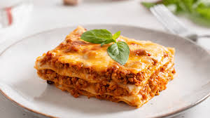

Lasagna Recipe

Description
Lasagna is a hearty Italian dish made by layering wide, flat pasta sheets with rich meat sauce, creamy béchamel or ricotta cheese, and melted mozzarella, all baked to golden perfection. The flavors develop through layers of savory ground meat, tangy tomato sauce, and aromatic herbs like basil and oregano. It’s a comfort food classic known for its satisfying texture and bold, layered taste.
Ingredients
- Ricotta Cheese
- Spices
- Garlic
- Beef
- Egg
- Mozzarella
- Parsly
- Lasagna
- Tomato Paste
Steps
- Step 1: Boil Pasta
- Step 2: Prepare Meat Sauce - cook beef with garlic and simmer for a few minutes
- Step 3: Combine cheese mixture - Stir the cheese in a bowl
- Step 4: Layer & Bake - layer the meat and cheese with the noddles and bake until the top is golden brown
Home